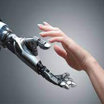
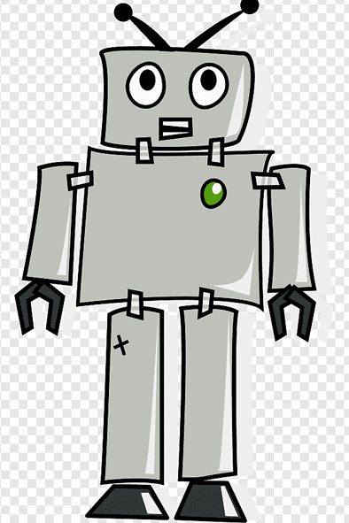

Conceptos destacados de la ROBÓTICA
La robótica es una disciplina que se ocupa del diseño, operación, manufacturación, estudio y aplicación de autómatas o robots. Para ello, combina la ingeniería mecánica, ingeniería eléctrica, ingeniería electrónica, ingeniería biomédica y las ciencias de la computación, así como otras disciplinas.
La robótica representa la cumbre en la trayectoria de desarrollo =======
Conceptos destacados de la ROBÓTICA
La robótica es una disciplina que se ocupa del diseño, operación, manufacturación, estudio y aplicación de autómatas o robots. Para ello, combina la ingeniería mecánica, ingeniería eléctrica, ingeniería electrónica, ingeniería biomédica y las ciencias de la computación, así como otras disciplinas.
La robótica representa la cumbre en la trayectoria de desarrollo >>>>>>> e4fb6f36268d5c4ea94a60102cf5b36919878eaf tecnológico, es decir, del diseño de herramientas. Su cometido es construir una herramienta que pueda desempeñar muchas de las labores que actualmente desempeña el ser humano, de manera más eficiente y rápida, o en condiciones y ambientes que al ser humano le serían inaccesibles.
El robot es, de algún modo, la herramienta más inteligente posible. Sin embargo, el desarrollo de este tipo de herramientas, ya desde los años de los inicios de la automatización, también se traduce en desempleo y en la sustitución de mano de obra humana por autómatas.
Esto alimenta también un miedo ancestral a perder el control sobre este tipo de herramientas, o a ser reemplazado, dominado o violentado por ellas, advertencias que figuran incluso en textos tan antiguos como el Golem de la tradición hebrea, o el monstruo de Frankenstein creado por la novelista inglesa Mary Shelley.